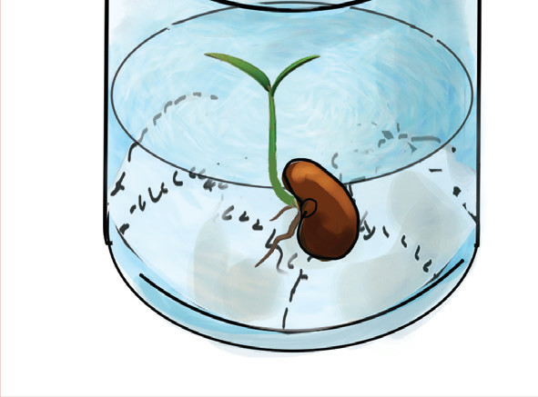
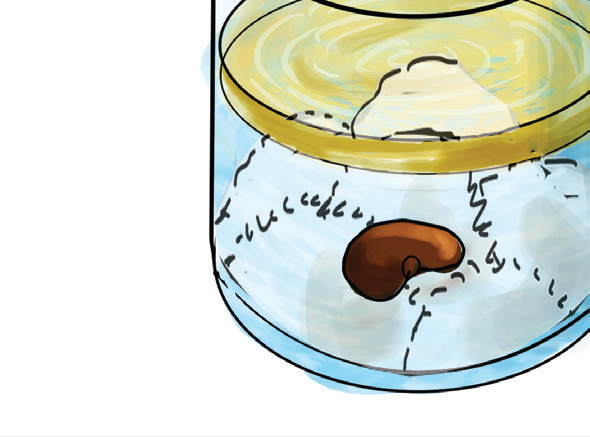

A

B
Kielelezo namba 4: Umuhimu wa hewa kwa mmea
Angalizo. Hakikisha unafunika maji yaliyochemshwa ukisubiri yapoe.
Matokeo: Je, kuna tofauti gani katika kuota kwa mbegu kati ya chupa A na B? Andika taarifa ya matokeo ya jaribio ulilofanya.
Hitimisho: Andika hitimisho la jaribio ulilolifanya.
Jaribio la 5: Kufanya uchunguzi kuhusu umuhimu wa hewa kwa wanyama
Lengo: Kuonesha kuwa hewa ni muhimu katika upumuaji wa panzi
Vifaa: Panzi wawili, chupa 2 zenye mifuniko, majani mabichi, na wavu
Hatua
1. Andika herufi A katika chupa ya kwanza na B katika chupa ya pili. Angalia Kielelezo namba 5.
2. Weka panzi kwenye chupa A yenye majani mabichi yaliyonyunyiziwa maji kisha funika juu kwa wavu.
3. Weka panzi wa pili kwenye chupa B yenye majani mabichi yaliyonyunyiziwa maji, kisha funika kwa mfuniko kuzuia hewa isipite.